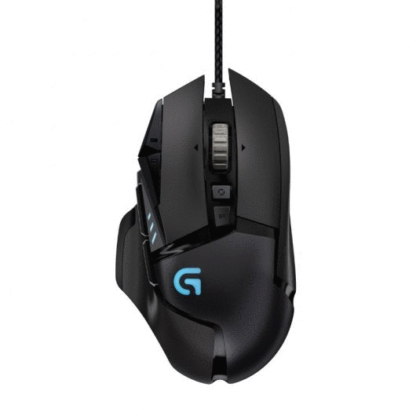
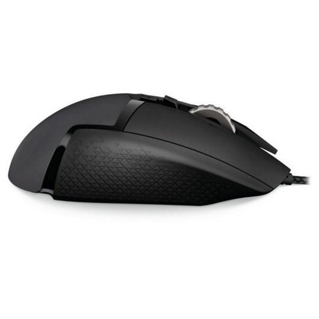
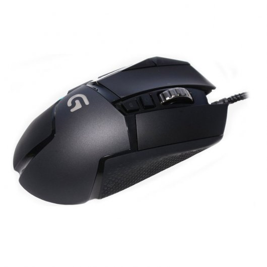
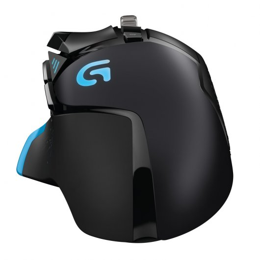
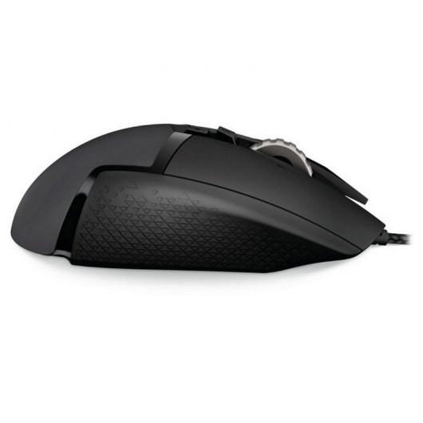
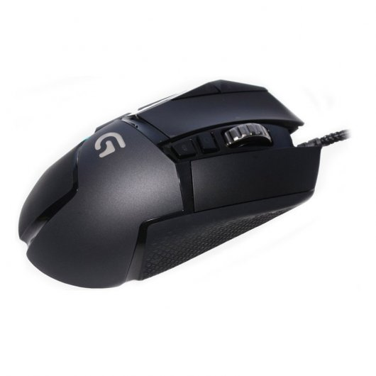
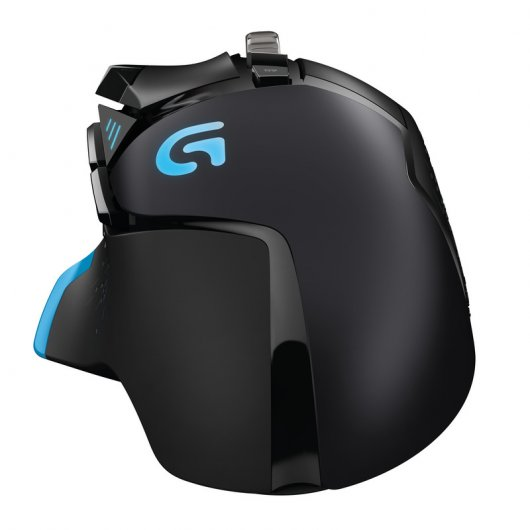

FUTURETECH STORE |

 





|
Logitech G502 Proteus
69,99€
os ratones Gaming son el arma definitiva para convertirte en un maestro de la muerte shooters y mobas. En concreto el Logitech G502 será como una extensión de tu mano gracias a su ergonomía y diseño pensado para ser preciso, certero y mortal en todas las situaciones.
Este ratón Gaming se beneficia de un sensor óptico con tecnología Logitech G Delta Zero, minimizando la aceleración del ratón y aumentando la precisión a la hora de apuntar. Podrás alternar con un solo click entre cinco valores entre 200 y 12.000 DPI ¡Dispara!
El Logitech G502 Proteus Spectrum se adapta a tu gusto gracias a cinco pesas de 3.6g que puedes insertar en las posiciones deseadas para hacerlo más ligero o robusto según tus preferencias para que alcances un vínculo único con tu ratón.
Elige el color de los leds de tu ratón Logitech entre más de 16 millones de opciones y el nivel de brillo según tus gustos y estilo. El Software Logitech Gaming te permite sincronizar patrones y efectos de color con otros dispositivos de la serie G de la compañía para unificar su comportamiento creando efectos y patrones muy llamativos.
Aunque el G502 venga preconfigurado para las alfombrillas de la marca G240 y G440, podemos modificar el nivel de precisión del sensor para adaptarlo a nuestro entorno de juego de forma fácil y rápida para que afines mejor que nunca esa aim.
Con 11 botones programables, este es uno de los ratones gaming más versátiles que encontrarás. Configúralo con tus macros y comandos favoritos, selecciona entre los miles de perfiles disponibles o crea uno ceñido a tus necesidades.
Especificaciones
Seguimiento
Resolución: 200 – 12.000 dpi
Aceleración máxima: >40 G*
Velocidad máxima: >300 IPS
Respuesta
Formato de datos USB: 16 bits/eje
Velocidad de respuesta USB: 1000 Hz (1 ms)
Microprocesador: 32 bits ARM
Deslizamiento
Coeficiente de fricción dinámica**: 0,10 µ (k)
Coeficiente de fricción estática*: 0,15 µ (s)
Resistencia
Botones (izquierdo/derecho): 20 millones de clics
Requisitos del sistema
Windows® 10, Windows 8.1, Windows 8, Windows 7
Puerto USB
Especificaciones físicas
Altura: 132 mm(5,2 in)
Anchura: 75 mm (2,95 in)
Profundidad: 40 mm (1,57 in)
Peso: 168 g (5,9 oz) ratón y cable
Peso: 121 g (4,3 oz) sólo ratón
|


{kind=link}
{kind=link}
{kind=link}